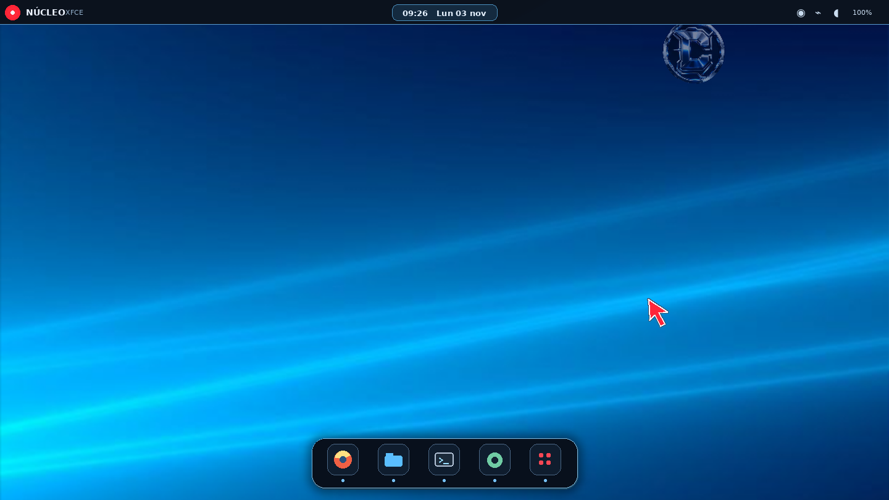
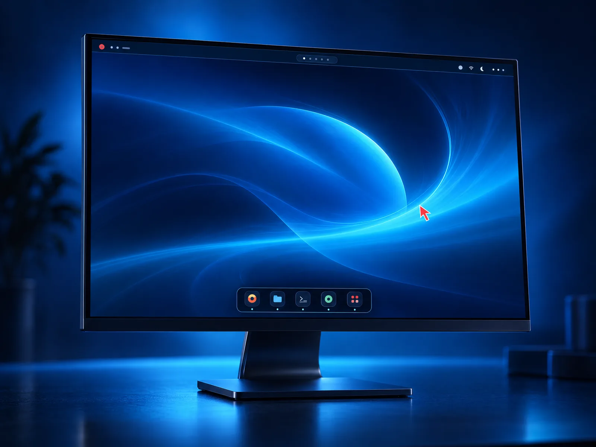
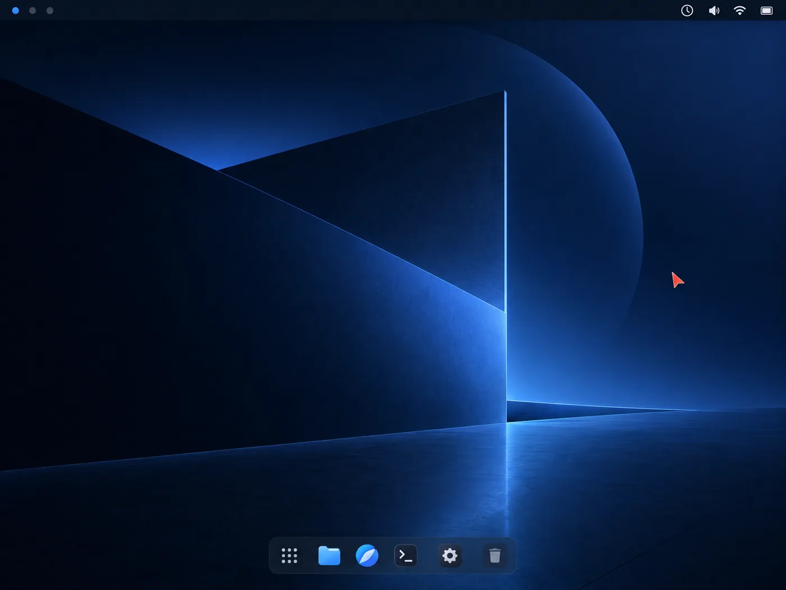
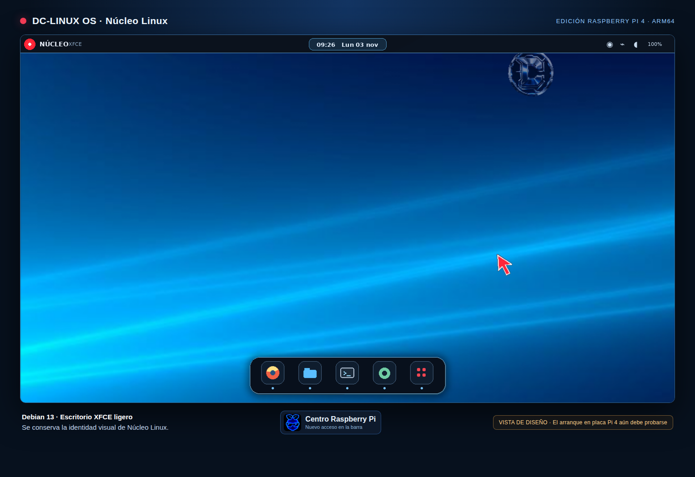
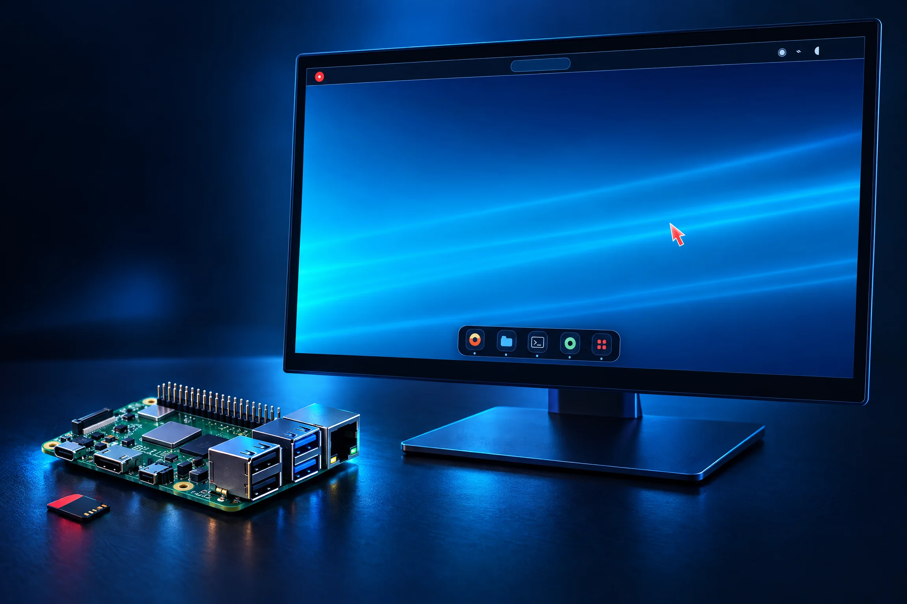
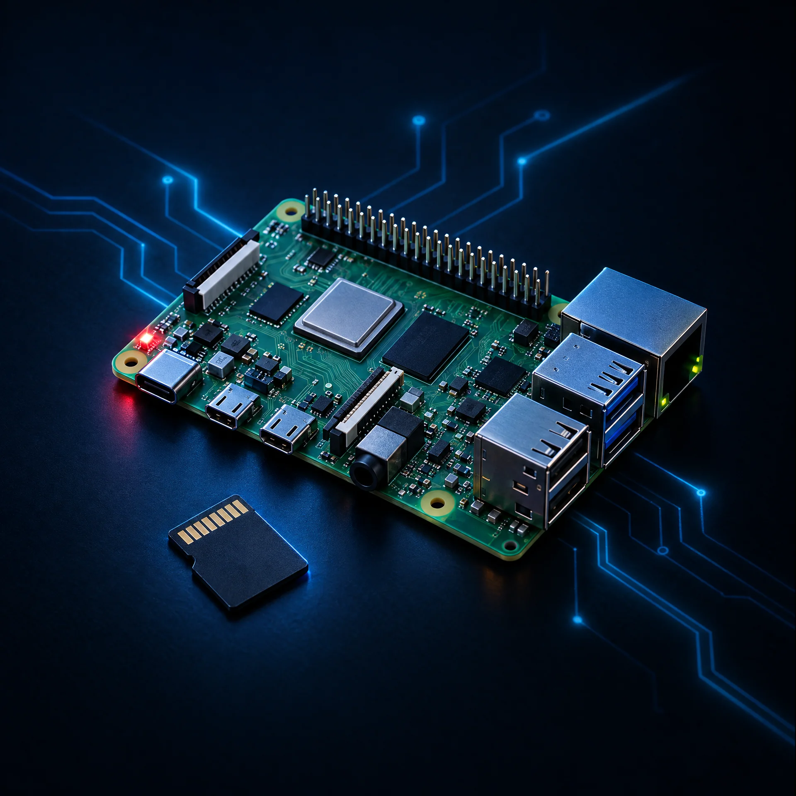
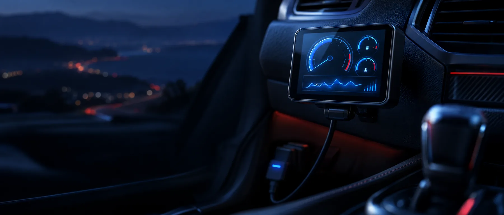
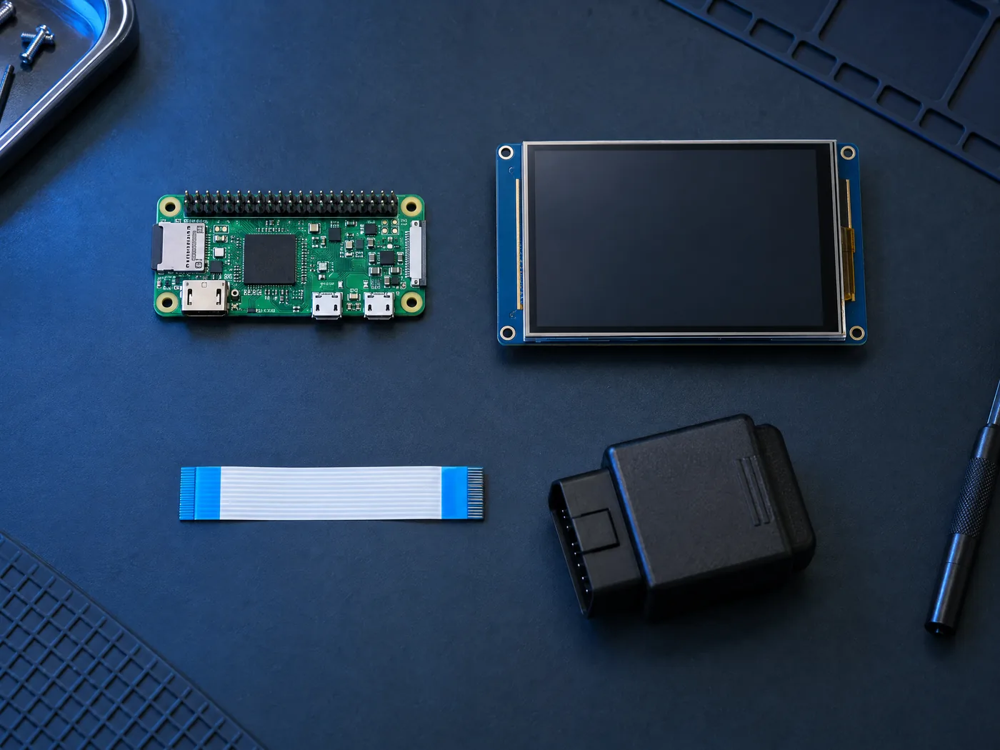
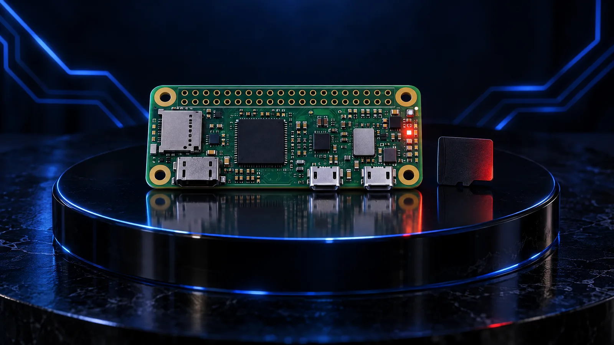
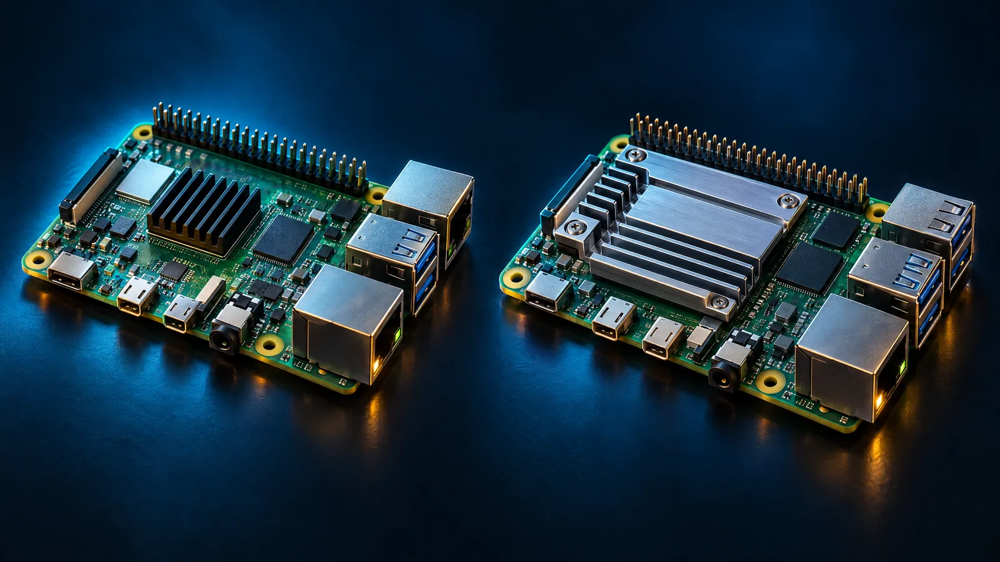

XFCE ligero
Un escritorio ligero y personalizable, basado en el entorno XFCE.
DEBIAN 13 · TRIXIE · XFCE
DC-LINUX une una base Debian Live, un escritorio XFCE y una identidad visual hecha para sentirse tuya.


Sesión Live desde USB.
Instalador Debian integrado.
DC-LINUX es una edición Live ligera basada en Debian 13 (Trixie) y XFCE. Arráncala desde una memoria USB, pruébala sin instalar y decide cuándo hacerla tu sistema.
La imagen incluye firmware de Debian, NetworkManager y Firefox ESR. También integra el instalador Live de Debian.
Leer la documentaciónTodo lo necesario.
Nada que estorbe.
Una selección concreta de paquetes y herramientas para la sesión Live.
Un escritorio ligero y personalizable, basado en el entorno XFCE.
Arranca desde USB y elige la sesión Live o el instalador de Debian integrado.
Incluye NetworkManager y firmware de Debian para equipos compatibles.
Fondo Núcleo, panel superior y cursor rojo DC-Red-Luminous.
CÓDIGO PÚBLICO.
CONSTRUCCIÓN VISIBLE.
El repositorio es público. Consulta el script y la configuración que construyen la ISO; puedes proponer cambios mediante issues o pull requests.
Ver script de compilaciónUna sesión limpia.
Un pulso azul.
Un lenguaje visual de negro, azul eléctrico y un golpe de rojo. Sobrio cuando toca. Luminoso cuando importa.

PC / AMD64 + Raspberry Pi 4 / ARM64.
Elige tu edición.
Descarga la edición que corresponde a tu equipo, verifica su SHA-256 y prepara una USB o una microSD.
EVIDENCIA PÚBLICA / 03
El build del sitio es obligatorio para los cambios que llegan a main; los enlaces y sumas apuntan a fuentes públicas.
HTTPS/HSTS protege el transporte. SHA-256 permite comparar cada archivo con la suma publicada; no sustituye una firma digital ni prueba por sí solo la autoría.
01 / PC · AMD64 · BIOS + UEFI
ISO híbrida basada en Debian 13 y XFCE. Como cada archivo tiene un límite de tamaño, la ISO se descarga en dos partes.
live-image-amd64.hybrid.iso.part00, live-image-amd64.hybrid.iso.part01 y live-image-amd64.hybrid.iso.sha256.cat live-image-amd64.hybrid.iso.part00 live-image-amd64.hybrid.iso.part01 > live-image-amd64.hybrid.isoComprueba el checksum con sha256sum -c live-image-amd64.hybrid.iso.sha256 en Linux/WSL o shasum -a 256 -c live-image-amd64.hybrid.iso.sha256 en macOS.SHA-256 esperado: 94e3e87f82210501c812ad7a3b062ff6620eee5e56c07cdf192542463b9d9e47La grabación borra la unidad USB seleccionada. Revisa dos veces el destino antes de escribir.
02 / RASPBERRY PI 4 · ESCRITORIO · ARM64
Edición de escritorio ARM64 basada en Debian 13 y XFCE. Conserva la identidad visual de Núcleo: fondo azul, cursor rojo, reloj superior y barra de aplicaciones centrada. La imagen comprimida se graba en una microSD.
Verifica el SHA-256 publicado antes de grabar. Escribir sobrescribe la microSD elegida; confirma el destino antes de continuar.



LA PRÓXIMA SESIÓN EMPIEZA AQUÍ
Explora el proyecto y consulta la edición Live de Núcleo Linux 1.0, basada en Debian 13 y XFCE.
Proyectos compactos.
Imágenes y descargas por modelo.
PROYECTOS DC LABORATORY
Imágenes mínimas para Raspberry Pi y un panel de diagnóstico OBD-II de DC Laboratory.

DC LABORATORY / OBD-II
DISEÑO DEL PANEL OBD-IIDC LAB · PROYECTO DE DIAGNÓSTICO
Interfaz compacta para consultar información de diagnóstico del vehículo mediante OBD-II. Hardware objetivo: Raspberry Pi Zero W 1.1 con pantalla de 3,5 pulgadas.
DC-LINUX / IMÁGENES MÍNIMAS PARA RASPBERRY PI
Cada imagen incluye una suma SHA-256 para comprobar la integridad del archivo descargado.

DESCARGA EN RELEASE · SHA-256 DISPONIBLE
DC-LINUX-PiZeroW-Minimal.img.xz
190acd16661b78087e8fd2968844e1400a18fc33afcdd796d4c264036795c84d
DESCARGA EN RELEASE · SHA-256 DISPONIBLE
DC-LINUX-Pi4-Pi5-Minimal.img.xz
07b2cf7e18c6e1601de3cf65b226ab8c57f1218a6253b0a6cb0d5ba1b12bf812ESPACIO RESERVADO · SIN DESCARGA
Este espacio queda listo para futuras ISOs Raspberry Pi. Se habilitará cuando haya una edición publicada y su checksum SHA-256.
EDICIÓN / MODELO / HASHGUÍA RÁPIDA / VERIFICACIÓN Y GRABACIÓN
Descarga cada imagen junto con su archivo .sha256 desde estas tarjetas. Comprueba el hash, descomprime el archivo y graba el .img resultante en una microSD.
sha256sum -c DC-LINUX-PiZeroW-Minimal.img.xz.sha256
sha256sum -c DC-LINUX-Pi4-Pi5-Minimal.img.xz.sha256xz -dk DC-LINUX-PiZeroW-Minimal.img.xz
xz -dk DC-LINUX-Pi4-Pi5-Minimal.img.xzGrabar la imagen sobrescribe la USB o microSD seleccionada. Confirma el dispositivo de destino y guarda una copia de seguridad antes de continuar.
¿Quieres explorar más proyectos de DC Laboratory?
Regresar al laboratorio